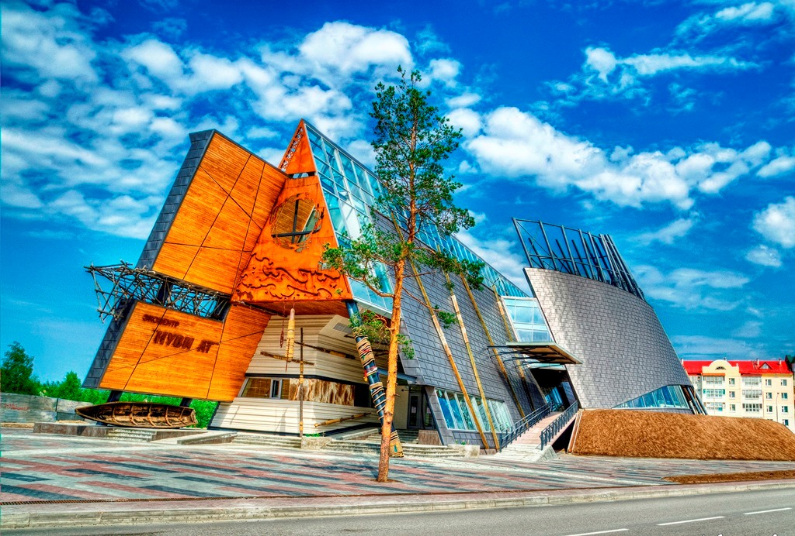
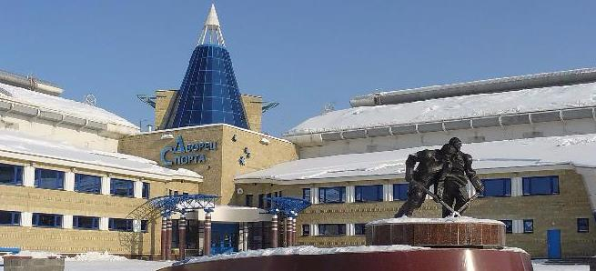
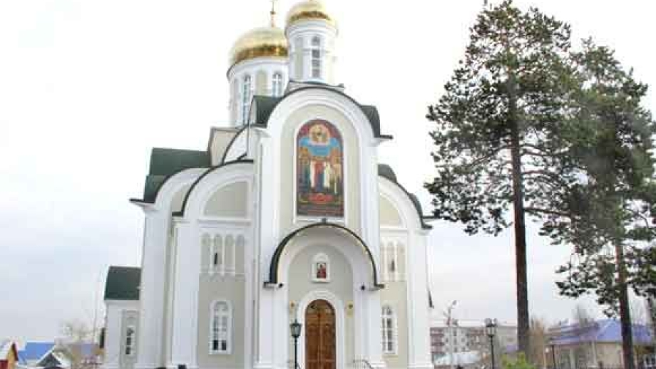

Достопримечательности Белоярского
Центр особо охраняемых природных территорий «Нуви Ат»;
Дворец спорта;
Храм Преподобного Серафима Саровского;
Историко-краеведческий музей;
Набережная «Сэй Пан»;
Памятник комару.
Памятник первопроходцам.


